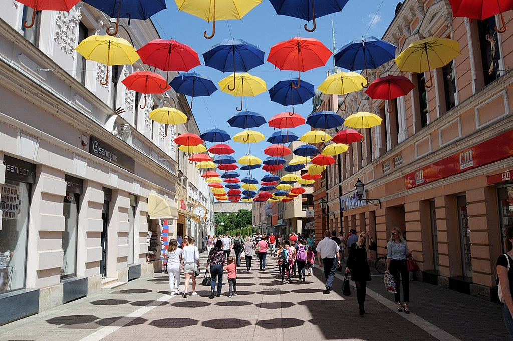
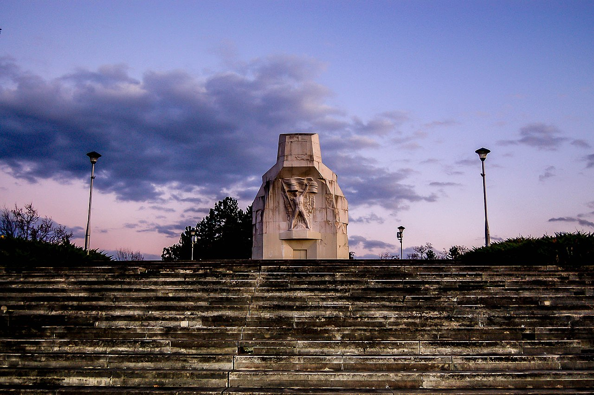
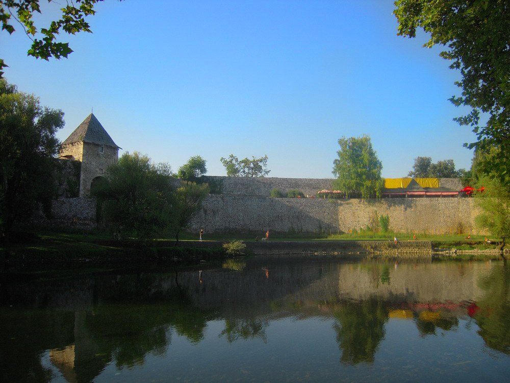
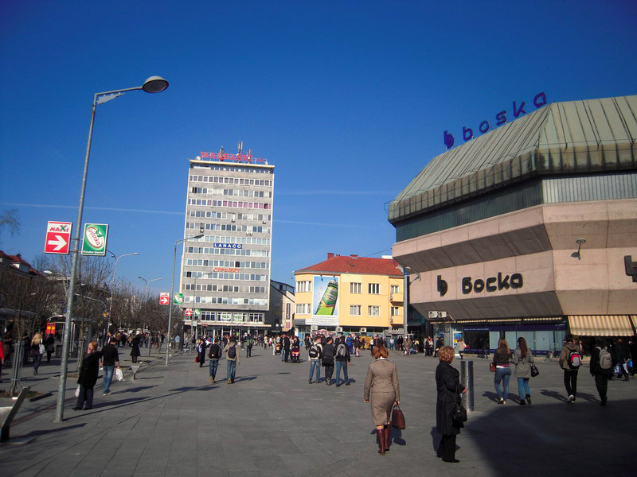
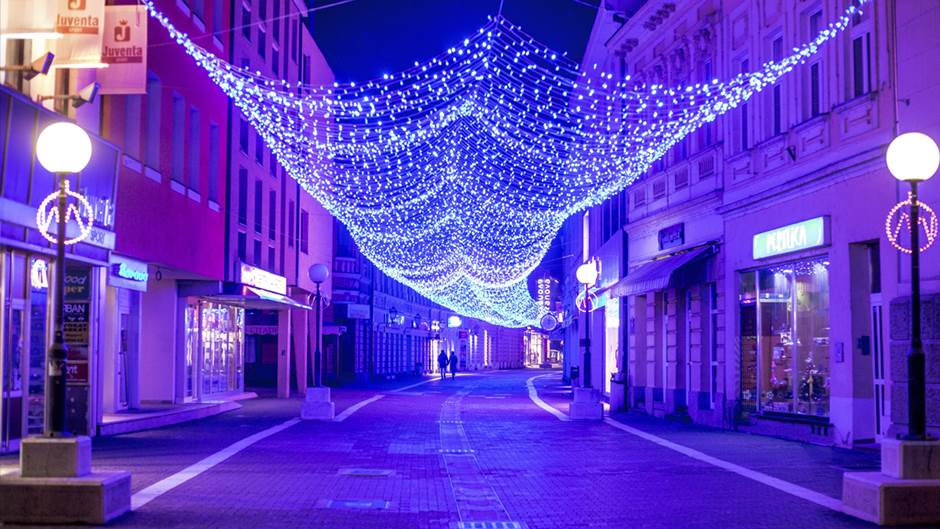

Banja Luka, grad na Vrbasu.
Banja Luka je drugi po veličini grad u Bosni i Hercegovini. Prema popisu stanovništva iz 2013. cijela opstina broji 185 042 stanovnika i do 2019. bilježi pad budući da posljednja procjena zavoda za statistiku iznosi 184 843. Banja Luka je središte Bosanske Krajine, regije na sjeverozapadu BiH. Grad leži na rijeci Vrbasu. Banja Luka je de facto administrativni centar Republike Srpske.
Upoznajte grad
Banj Brdo
Banj brdo (ranije Šehitluci) je najpoznatije banjalučko izletište. Nalazi se na južnoj strani grada i odande se pruža panoramski pogled na grad. Nalazi se na 431 metar nadmorske visine. Izletište je bogato šumom, stazama za šetnju i planinarenje, izvorima vode kao i uređenim mjestima za odmor. Na njemu se nalazi i monumentalni spomenik palim Krajišnicima stradalim u NOB-i, djelo poznatog hrvatskog - kipara Antuna Augustinčića. Njegov vrh je udaljen svega 5 km od centra Banjaluke.
Tvrdjava Kastel
Tvrđava Kastel se nalazi u Banjoj Luci i predstavlja jednu od najstarijih građevina u Bosni i Hercegovini. Postoji malo informacija o tome ko i kada je sagradio Kastel ali po mnogim procjenama tvrđavu Kastel su najvjerojatnije sagradili Rimljani u 3. vijeku, iako neki nalazi tvrde da je tvrđava izgrađena kasnije, tj. u 9. vijeku nove ere. Tvrđava je sa svih strana opasana kamenim zidinama, na kojima su podignute puškarnice i osmatračnice, što govori da je u prošlosti bila veoma snažno vojničko utvrđenje.
Trg Krajine
Trg Krajine je glavni banjalučki trg. Na Trgu je postavljen Krivi sat kao podsjetnik na razorni zemljotres koji je zadesio Banju Luku 1969. godine. Jedan od simbola Trga je i robna kuća Boska, koja je otvorena 1978. godine i koja je svojevremeno predstavljala jedan od poznatijih objekata tog tipa u bivšoj Jugoslaviji.
Gospodska Ulica
Gospodska ulica je najpoznatije banjalučko šetalište koje nosi dva imena, jedno je ulica Veselina Masleše, a drugo je opšte poznato ime prihvaćeno u narodu - “Gospodska ulica”. Poznati banjalučki trgovac Toma Radulović, bio je prvi koji je dobio dozvolu da u gradu otvori trgovinu, izgradio je jednospratncicu 1855. pod nazivom Albanija. Dosadivši da mu u radnju ulaze seljaci i slabo šta pazare, on je na zgradu samoinicijativno, istakao rukom napisan naziv „Gospodska ulica“. To je bilo neposredno pred ulazak Austrougarske vojske u Banjaluku, pa su oni ovaj naziv i prihvatili te se ulica zvanično zvala „Herren gasse“ do 1918. Naziv se primio, prvo na austrijskim razglednicama, na kojima je Gospodska nazvana Herrengasse, a potom i u svakodnevnom govoru. Prije njihovog dolaska zvala Pivarska. I pored mnogobrojnih promjena naziva, među Banjalučanima i turistima ona je i danas najpoznatija kao "Gospodska ulica“. Danas se u ovim objektima duž Gospodske ulice nalaze mnoge trgovačke radnje koje nude robu domaćih i svjetskih proizvođača.
